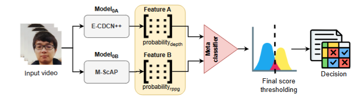

Medical Vision-Language Models
Understanding how multimodal foundation models represent and reason about radiology images and clinical concepts.
PhD Researcher in Medical Vision-Language Models
I study how multimodal AI systems understand medical images, particularly when data are imbalanced, findings are rare, or model behaviour is difficult to interpret.

Medical images are complex, rare findings matter, and reliable model behaviour needs careful evaluation.
Understanding how multimodal foundation models represent and reason about radiology images and clinical concepts.
Improving recognition and evaluation for rare and underrepresented findings in real-world medical datasets.
Studying model behaviour, robustness, grounding, calibration, representation, and explanation quality.
Research into evaluation, imbalance, and interpretation in medical imaging.

A model-agnostic evaluation framework for chest-CT vision-language models spanning classification, calibration, retrieval, reconstruction consistency, interpretability, and related model behaviour.
Explore research →
A research program on rare-finding recognition, cross-dataset behaviour, calibration, grounding, and adaptation strategies for chest X-ray and CT models.
Explore research →
Understanding representation and explanation behaviour under class imbalance and distribution shift.
Read publication →
Combining depth information and physiological signals for face presentation-attack detection.
Read publication →Presentation-attack detection using depth and physiological cues.
Interpretability analysis of biomedical VLM behaviour in radiology settings.
Visualization tooling for temporal interval structures in streaming system data.
A real-world Ontario clinical study informed by electronic health-record analysis.
Work with EvenUp, Pfizer Canada, and Queen's collaborators connects machine learning to legal retrieval, clinical research, and visualization.

Built relevance evaluation and reranking methods for legal information retrieval.

Analyzed unstructured electronic health records to study patient characteristics and comorbidity patterns.

Manager: Dr. Sean Kauffman
Co-created a visualization interface for space log analysis and nfer, bringing streaming events and temporal interval hierarchies into interactive views. Built the interface with Python Socket.IO and D3.js.
Python Socket.IO · D3.js · Streaming visualization

Supervisors: Prof. Farhana Zulkernine and Dr. Nicholas Cofie
Automated the extraction and evaluation of resident Entrustable Professional Activities from assessor notes. Analyzed sentiment and Spearman correlation between assessor feedback and committee comments.
Supervisors: Prof. Farhana Zulkernine and Assoc. Prof. Nora Fayed
Automated literature filtration, information extraction, and classification across 8,000 clinical randomized controlled trial articles using domain-specific BERT, with a reported 95% specificity. Contributed to grant writing.